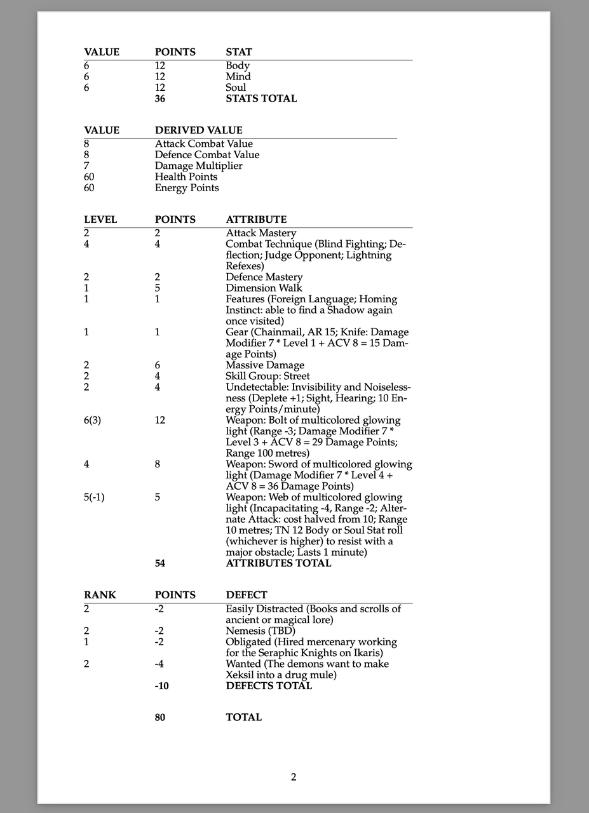
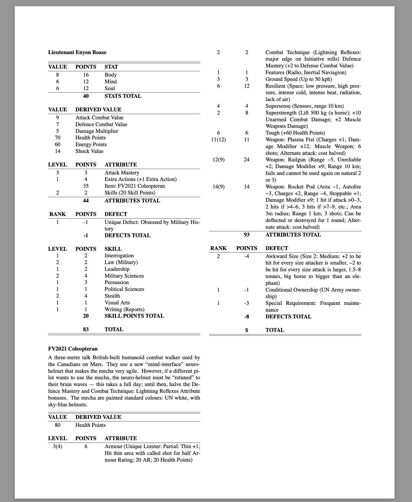
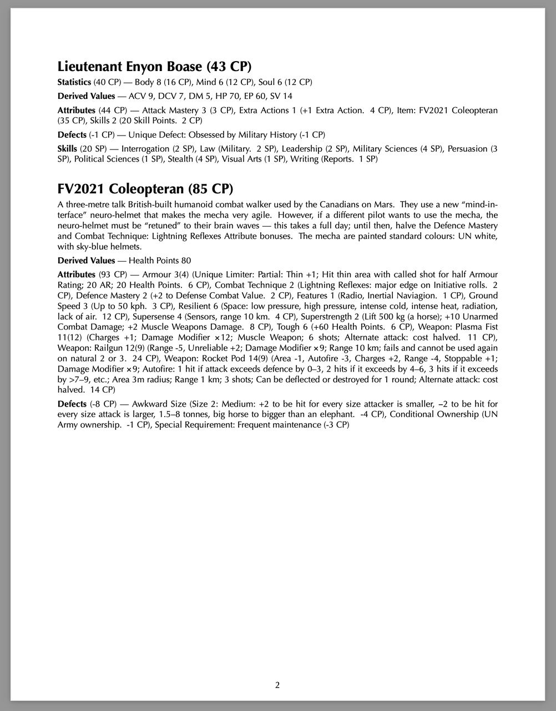
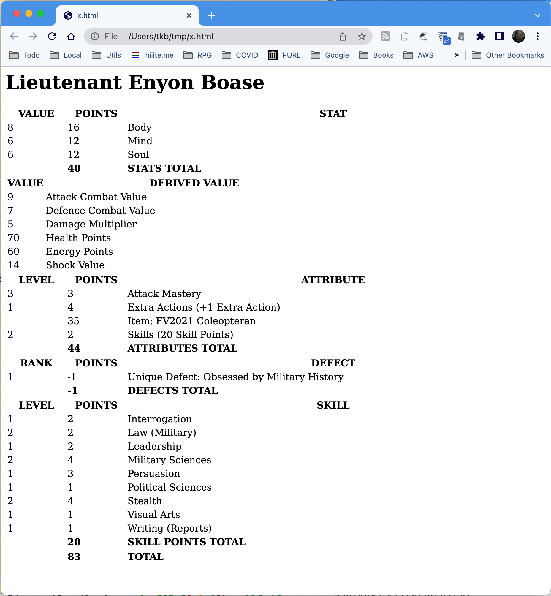

Simple OVA Character Sheet for LibreOffice Calc
I added a brutally simple character sheet for OVA: The Anime Role-Playing Game to my RPG Downloads page. It is for LibreOffice Calc. There is also a brutally simple PDF generated from it as well.
Random musings on books, code, and tabletop games.
I added a brutally simple character sheet for OVA: The Anime Role-Playing Game to my RPG Downloads page. It is for LibreOffice Calc. There is also a brutally simple PDF generated from it as well.
I've made some stuff that I've used for some RPGs available for download. Right now it has reference sheets for several editions of Big Eyes, Small Mouth (Second Edition Revised, Third Edition, and Fourth edition) and for OVA: The Anime Role-playing Game.
Last edited: 2023-02-14 07:06:18 EST
So. I have a CHICKEN Scheme program that converts Big Eyes Small Mouth 4E characters from a YAML definition into reStructuredText (reST).
Unfortunately, pandoc’s (and probably the orginal python docutils’), formatting of tables from reST is limited and doesn’t let me do what I need to do.[1]
Here’s an image of the BESM 4E character, Xeksil [2], I played Wednesday night:
As you can see, it doesn’t fully fill the width of the page, and the first two columns are too wide for the information they contain.
I’m contemplating changing the program so that the actual tables are
in groff tbl format directly, and insert them into the
generated reST file in .. raw:: ms directives. That locks
me into using pandoc’s groff ms macros output, but I
could just write a new version that outputs ConTeXt (C1, C2) if I
ever need one…
As a test, I converted a character and his mecha into raw groff ms with tbl output. Here’s an image of that:
As you can see, the tables fill the width of the text entirely and the first two columns are narrower and the third column expands to fill the width of the text. I was also able to put double lines before and after each entity, and put single lines after the headers and before the total lines.
I think this looks much better.
Note that the first example is on 5.5” by 8.5” page (which I use for things I’m going to look at on the screen a lot, because it takes up less space) and the second example is on 8.5” by 11” paper and in two columns. It was essentially impossible to have pandoc (and I’m sure docutils) produce 2 column output and have the reST versions of the tables adapt to the width of the columns. With the narrower widths of the first two table columns the third table column is wide enough that I can use pages with two columns.
CPB (who I talked about this with earlier) commented: The data is in YAML now right? Why not just generate troff?
Because when I write the actual text of things, I prefer reST. So, for instance, the description of the character or entity I write in reST. And I like reST for the main documents into which I include these generated files because then I can output to HTML too. (Or to ConTexT; I’ve got some documents where I needed features that ConTexT has and pandoc’s groff -ms output doesn’t have.)
I’ve already written the character formatting program (named
besm-rst, originally enough) so that it can output the
table version or a terse version where the different sections are in
normal paragraphs, which is useful because it is much more compact.
Adding a version that outputs reST with tables expressed as an
reST .. raw:: ms block that contains the table sections as
groff -ms tbl source would just be writing another
version of the output routine, selectable with a command line option.
The original output routine to produce reST grid tables and its support procedures were 315 lines. The second output routine to paragraphs and its new support procedures (it uses some of the first output routine’s support procedures) was 158 lines.
It will be interesting to see how long the troff output will be.
Oh, here is Lieutenant Enyon Boase again, this time in paragraph format:
That’s also a 8.5” by 11” page, and as you can see, it’s much more compact, but harder for folks to find each individual item. This is basically the format that was used in the original BESM 1E and 2E books, and the table based version appeared in BESM 3E and was continued in 4E.
I think the table format is much easier to read.
Now, when I use the reST table output and generate HTML from it it looks kinda crude:
However, I think I may be able to fix that with CSS.
The HTML is relatively clean. (It probably doesn't really need the width specifications in the colgroup element, but pandoc puts those in.)
That’s actually six tables. If I wrap them in one div with a particular class I think I can get them formatted right.
CPB commented: CSS supports printing.
Yes, there is actually at least one commercial document formatting system that uses CSS for sophisticated print output, much more elaborate than what the browsers support, I think. And there is at least one open source solution, weasyprint, that uses CSS to produce PDF.
But I know tbl better than CSS. 😉
I do have a need for good looking output html for the output of the program: so I can put it on my blog! It would be better than images in cases where I’m not actually comparing the PDF output of various things.
Well, it took me longer that I expected, 4¼ hours. After the first 2 hours I was fried (it had been a long day): if I had stopped then I probably could have finished it the next day in an hour. Oh well. The new output routine and its new supporting routines were 208 lines long.
Here's an image of the page produced (probably from same YAML file; I
have a couple, since one of them was an early test file for
besm-rst) using the new output routine, with reST
output with tbl output in .. raw:: ms, pulled from the
document with all the pregenerated characters:
And for reference, here is the YAML version of Enyon Boase:
--- - name: Lieutenant Enyon Boase stats: # Average: (/ (+ 8 6 6) 3.0) 6.666666666666667 - name: Body value: 8 points: 16 - name: Mind value: 6 points: 12 - name: Soul value: 6 points: 12 derived: - name: ACV value: 9 - name: DCV value: 7 - name: DM value: 5 - name: HP value: 70 - name: EP value: 60 - name: SV value: 14 attributes: - name: Attack Mastery level: 3 points: 3 - name: Extra Actions level: 1 points: 4 details: +1 Extra Action - name: "Item: FV2021 Coleopteran" points: 35 - name: Skills level: 2 points: 2 details: 20 Skill Points defects: - name: "Unique Defect: Obsessed by Military History" rank: 1 points: -1 skills: - name: Interrogation level: 1 points: 2 - name: Law level: 2 points: 2 specialisations: - Military - name: Leadership level: 1 points: 2 - name: Military Sciences level: 2 points: 4 - name: Persuasion level: 1 points: 3 - name: Political Sciences level: 1 points: 1 - name: Stealth level: 2 points: 4 - name: Visual Arts level: 1 points: 1 - name: Writing level: 1 points: 1 specialisations: - Reports
And here is the YAML version of his FV2021 Coleopteran:
--- - name: FV2021 Coleopteran page: BRCS, p. 94=95 description: | A three-metre talk British-built humanoid combat walker used by the Canadians on Mars. They use a new “mind-interface” neuro-helmet that makes the mecha very agile. However, if a different pilot wants to use the mecha, the neuro-helmet must be “retuned” to their brain waves — this takes a full day; until then, halve the Defence Mastery and Combat Technique: Lightning Reflexes Attribute bonuses. The mecha are painted standard colours: UN white, with sky-blue helmets. derived: - name: Health Points value: 80 attributes: - name: Features level: 1 points: 1 details: "Radio, Inertial Naviagion" - name: Ground Speed level: 3 points: 3 details: Up to 50 kph - name: Armour level: 3 effective: 4 points: 6 limiters: - "Unique Limiter: Partial: Thin" details: | Hit thin area with called shot for half Armour Rating; 20 AR; 20 Health Points - name: Combat Technique level: 2 points: 2 details: "Lightning Reflexes: major edge on Initiative rolls" - name: Defence Mastery level: 2 points: 2 details: +2 to Defense Combat Value - name: Resilient level: 6 points: 12 details: | Space: low pressure, high pressure, intense cold, intense heat, radiation, lack of air - name: Supersense level: 4 points: 4 details: Sensors, range 10 km - name: Superstrength level: 2 points: 8 details: | Lift 500 kg (a horse); +10 Unarmed Combat Damage; +2 Muscle Weapons Damage - name: Tough level: 6 points: 6 details: +60 Health Points - name: "Weapon: Railgun" level: 12 effective: 9 points: 24 details: | Damage Modifier × 9; Range 10 km; fails and cannot be used again on natural 2 or 3 enhancements: - [Range, 5] limiters: - [Unreliable, 2] - name: "Weapon: Rocket Pod" level: 14 effective: 9 points: 14 details: | Damage Modifier × 9; Autofire: 1 hit if attack exceeds defence by 0–3, 2 hits if it exceeds by 4–6, 3 hits if it exceeds by >7–9, etc.; Area 3m radius; Range 1 km; 3 shots; Can be deflected or destroyed for 1 round; Alternate attack: cost halved enhancements: - [Autofire, 3] - Area - [Range, 4] limiters: - [Charges, 2] - Stoppable - name: "Weapon: Plasma Fist" level: 11 effective: 12 points: 11 details: | Damage Modifier × 12; Muscle Weapon; 6 shots; Alternate attack: cost halved limiters: - Charges defects: - name: Awkward Size rank: 2 points: -4 details: | Size 2: Medium: +2 to be hit for every size attacker is smaller, −2 to be hit for every size attack is larger, 1.5–8 tonnes, big horse to bigger than an elephant - name: Conditional Ownership rank: 1 points: -1 details: UN Army ownership - name: "Special Requirement: Frequent maintenance" rank: 1 points: -3
The git repo with this program and some test data is on github.
Enyon Boase is a pregenerated character that I came up for my BESM 4E rewrite of the BESM 1E adventure “Red Planet, Blue Helmets”, from Big Robots, Cool Starships. The FV2021 Coleopteran is also from that adventure.
I'm trying an experiment in minimal blogging at Lacking Natural Simplicity, Another Take, using Lichen (a Content Management System someone wrote in Forth) and Gemtext.
Last edited: 2022-12-26 22:43:46 EST
I got an interesting game yesterday, and finished reading it today: the 1991 Lord of the Rings Adventure Game from Iron Crown Enterprises, which was the first holder of the Tolkien franchise for RPGs.
ICE got its start with Rolemaster, which started as a detailed add-on combat system for D&D and developed into a very detailed RPG of its own, based on open-ended d100 rolls: high is good and on very high or low rolls you roll again and add the new roll for high or subtracted for low, continuing infinitely in either direction.
ICE then got the Tolkien franchise and developed Middle-Earth Role Playing (MERP) as a slightly simplified RPG for those who wanted to play in Middle Earth, but did not want all the complexities of the full Rolemaster system. The adventures were written in such a way that you could play them either with Rolemaster or MERP, and had some short guidelines to help the GM adapt them for other games. They had a lot of success and their Middle Earth products were extensive and highly regarded.
Lots of folk used them with other RPG systems. (I bought several for the ideas.)
Later in their run, ICE wanted to tap the larger Tolkien readership and so wrote the Lord of the Ring Adventure Game as a much simpler game that they hoped would draw interested readers and the viewers of the animated Hobbit and Lord of the Rings.
(I have fond memories of the animated Hobbit, though I knew it only through reading the graphic novel adaptation that used art from the movie when I was at my uncle and aunt's place in New York one summer. I finally saw it, probably on TV some years later.)
Anyway, the Lord of the Rings Adventure Game (LOR hereafter, as seems to be customary) comes in a box with a 32 page rulebook, a 64 page adventure with 6 pre-generated characters, a 32 pamphlet of 4 pages of backstory for the 6 pregens and area maps for the adventure, several poster sized maps, including a nice color one of Middle Earth, and (missing in my copy, as the seller had noted in the description) 2 six-sided dice and a sheet of standup cardboard figures of people and creatures and the pregens.
Characters have 12 stats: 6 capabilities (Strength, Agility, Intelligence, Movement, and Endurance) and 6 skills (Defense, Melee Offensive Bonus, Ranged Offensive Bonus, General, Subterfuge, Perception, and Magical). The value of each of these is called a bonus, and can be less than zero.
You pick one of 9 character types (Hobbit Scout, Elf Scout, Human Warrior, Dwarf Warrior, Elf Warrior, Human Ranger, Half-elf Ranger, Human Bard, and Elf Bard), which sets your equipment and capability values and starting skill values, and then you have six +1 bonuses to add to your skills as you choose, no more than +3 to any one skill. If you have +1 or more in magic you get two spells per +1 bonus. Some of your equipment gives bonuses to your stats. I'll note that your character type doesn't restrict what you can do: if you want your Warrior to be able to use magic, put some of your starting skill bonuses into Magical! And they don't really have much to do with what your characters occupation is: someone who takes one of the Warrior character types can be a merchant, someone who takes one of the Scout character types can be a healer. It is all in how you assign your starting skill bonuses.
Your character type sets your Endurance (basically your hit points), with the dwarf warrior having the most at 60 points and the elf bard the least at 30 points.
There are 15 spells, all with a fairly reasonable balance between keeping with the magic seen in the novels, which is to say not tremendously powerful, and what one would expect from a fantasy RPG. The spells are Strength, Shield, Speed, Balance, Camouflage, Concentration, Item Analysis, Clairvoyance, Healing, Luck, Protection from Magic, Sustenance, Calm, Charm Animal, and Fire Bolt. Magic items typically add a plus to a stat, or let you do something you couldn’t before.
Maneuvers are how you use your stats. Some, like climbing a tree have a set difficulty. Others the GM sets the difficulty, from Routine (4) to Absurd (18).
You roll 2d6 plus a stat bonus versus a target number or an opponent’s roll. Meet or exceed an unopposed roll to succeed, while you can tie on opposed rolls. In combat you take the attacker’s Offensive Bonus minus the defenders Defensive Bonus and roll 2d6 and look the result up in a chart to see how much damage is done and whether the defender is knocked unconscious or killed outright.
Activities are things that are normally automatically successful if you have the equipment and time (tying up a captive, setting up camp, digging a ditch), but turn into GM moderated maneuvers if you don’t have the time or equipment (digging a ditch to hide in before the opponents you want to ambush show up).
There are 14 action sequences. These things like combat (one of the action sequences) where there is a general sequence you follow to do something, from sneaking through a town at night to tracking through a wilderness or ambushing an enemy. I like how these are written up as a standard sequence of things to do and consider, just like how combat is done in most system.
These action sequences can be adjusted by the GM for circumstances and they encourage you to make up your own. You might make one up for when someone is wanting to convince a crowd of something. They are multi-step procedures for doing something. I think they would be quite useful.
You get Experience Points (EP) for successful maneuvers depending on how hard the target number was, for every point of damage inflicted, with unconsciousness and killed results worth more, and for every point of damage the caster of a spell takes to cast the spell. (Every spell costs the caster Damage to cast!). You also get EP for good ideas and for the group accomplishing significant goals.
The included adventure is a mix of programmed sequences to help the new GM and players learn the system, where the choices the players make determines what section you turn to next, and the sections are broken up into action sequences and the results determine which section the players go to next, GM notes on how to run or adjust things, and descriptions of what happens.
I do notice that each of the pregens has a special ability: finding lost items or people, eidetic memory, knowing if any creature within a 20 foot radius is aligned with forces of darkness, healing wounds faster, being unusually skilled at bargaining and negotiation, and always knowing which way is north and can follow known routes perfectly. But there is no rule for assigning these to characters. I imagine that if the GM wanted to have special abilities for other characters the GM and the players should come up with them.
The rules encourage you to use figures or counters to represent characters in combat, and movement is given in inches, to be measured on the map, if you draw one, or on the table if you just set out the figures at the right distances. You could easily use a battle map with a grid, if you have one. Movement at a walk is 50 feet plus 10 feet multiplied by the characters Movement bonus.
Anyway, I like it. I hope to run it this year for Christmas, if all goes well.
There is, of course, a Wikipedia page about it, but it is even briefer than this post.
There is a compatible game, The Middle-Earth Adventure Game (MEAG), that was designed by Brian Gross and J.R. Gracen. I knew of it before I got the LotRAG, it seems to be a generalization and expansion, and thus a little more complicated, but it doesn't look too complicated. I'll read it and report what I think of it.
I wrote a post about using the old ada-mode.el that used to be distributed with Emacs because I couldn't get the newer, separate package version to work for me.
Well, this morning when I pulled up an Ada file in Emacs version 28 there were two problems:
The information to invoke ada-mode on Ada files was not in the
auto-mode-alist variable in Emacs. That was easy
enough to fix: add .ada, .ads, and .adb to
auto-mode-alist (and .gpr, too, since Ada mode works
for gprbuild files as well):
(cl-loop for ext in '("\\.gpr$" "\\.ada$" "\\.ads$" "\\.adb$") do (add-to-list 'auto-mode-alist (cons ext 'ada-mode)))
That was easy enough.
When I tried to do any indentation emacs reported an error,
with the error message “End position is smaller than start
position”. Eventually I tracked this down to a call to
parse-partial-sexp in ada-in-open-paren-p. It turns out
that somewhere after Emacs version 27.2 was released the
Emacs developers added a check to parse-partial-sexp to
ensure that the FROM argument (which indicates where in the
buffer to start parsing) was less than the TO argument (which
indicates where in the buffer to stop parsing).
Drat. Drat. Drat. Well, looking at the code it was clear that
since ada-in-open-paren-p is explicitly searching backwards
that TO would always be smaller than FROM. So I could
just transpose the s-expressions that found those two values. I
tried it, and it worked!
At that point I realized that I had committed to maintain the old version of ada-mode, at least for myself, and that I'd already talked about it on my blog and it was small step from there to setting up a GitHub repository with the old code, adding an issue describing the problem, adding a commit with the fix, and then writing this blog post.
Somewhere, someone is laughing and enjoying the schadenfreude. Maybe this will help someone else.
And since I already have a GitHub repository, I ought to document the first problem and since it is a documentation problem, put a mention in the README.
I finished reading Dyskami Publishing’s Demonicity tonight (PDF). I liked the document design and found it easy to read, except the “Demon City” two page spread which I found a pain to read because of the body font. I liked the artwork; it was not particularly anime or manga like, unlike BESM Fourth Edition. There were a few typos, missing words, and other minor mistakes, but there was only one that hindered comprehension, and that one I figured out eventually from the context. The rules are easy to understand.
The setting of Demonicity is the titular “Demon City”, a city that is the location of an attack by demons from an different world/dimension. It is obviously inspired by their earlier licensed RPG, Demon City Shinjuku, which I quite liked.
Demonicity has a very interesting stripped down version of the Tri-Stat system that makes character generation and play much simpler. In some ways it reminds me of BESM First Edition, though it is even simpler. The three Stats are Body, Mind, and Soul, of course, so that’s the same. There are also Attributes, which are the special things a character can do. Stats can be determined randomly or assigned by the player, and they and Attributes always cost points. And there are some Derived Values: Combat, Health, Sanity.
You roll 2d6 and add a stat or a derived value (like Combat), plus optionally an Attribue’s level, and compare the result to a target number or an opposed roll. Things that make something easier are Edges: you get an extra die or two on your dice roll, and you keep the highest two. Things that make something harder, like trying to use two weapons at once without training, gives you Obstacles: an extra die or two on your dice roll, but you keep the two lowest rolls. Edges cancel out Obstacles and vice versa. Combat is theater of the mind.
Demoicity’s version of BESM’s Attributes are quite stripped down. There are only nine: Adaptability, Damage, Demonicity, Fighting, Knacks, Movement, Resistance, Resources, and Skills. These are bought in levels as usual, but associated with each are a number of Foci (as many as one has levels in the Attribute), which gives the character a special ability. Demonicity is the Attribute that allows a character to do most of the more impressive supernatural things, for instance. A few of its Foci are Healing, Meld (mere with inanimate objects), and Shadow Form. The Fighting Attribute makes a character more proficient at combat than their Stats would suggest, and it’s Foci specify which kinds of Fighting you are better at (Melee or Ranged), or makes it easier to do certain things in combat (Blind Fighting, Two Weapons). Generally, an Attribute’s level adds to dice rolls for things associated with it, while having an appropriate Foci means that you get an Edge. After every session characters get a few points to increase their Stats and Attributes.
The rulebook is only 32 pages long and has a thicker card stock cover. It is accompanied by six one page adventures with related art on the back and by six pre-generated characters with an image of the character on the back, all on card stock. There are also four six-sided dice. The box everything comes in seems sturdy. In general the production values are quite good.
People who are confident with their improvisation skills can probably run the adventures easily, but those who like more details will probably want to do a bit more preparation. The adventures appear designed to be easily linked into a six episode mini-campaign, or can form the backbone of a longer campaign if the GM writes their own adventures.
I like the inclusion of the pre-generated characters and the one page adventures. They allow a gaming group to pick the game and start playing with little or no preparation. And the simplified rules make it easy to learn the game, and to create characters if the gaming group doesn't want to use the pre-generated characters. I think this makes it an excellent pick-up-and-play game.
I would like to have seen something like the adventure generators from various Savage Worlds setting books or Toon and its supplements. They allow the GM who is stuck for ideas to come up with something quickly when inspiration is lacking. But it would have been difficult to fit in the constraints of the product. Perhaps on another sheet of card stock, since I can’t see deleting anything from the rulebook? BESM and Tri-Stat generally have very little procedural support for coming up with NPCs, scenes, adventures, etc., and I think an adventure generator would be a useful addition. Of course, having the example adventures to give an idea of what Demonicity adventures would be like is very useful.
All in all, I quite like Demonicity and hope to play it soon. My only reservations are about the price of this game and the other two Tri-Stat boxed games, Pixies and Wyrms. Forty-five retail dollars Canadian for the physical product seems like a lot. The PDF seems more reasonable at 15 dollars.
Last edited: 2022-12-06 13:30:34 EST
When I did a search for “splitting strings on a delimiter in the Ada
programming language” recently I did not get many useful results.
Eventually I stumbled over GNAT.String_Split which is an
instantiation of the generic package GNAT.Array_Split. I also
finally found GNATCOLL.Strings_Impl and GNATCOLL.Strings, its
default instantiation, which looks especially interesting, contains
a split implementation, and which seems to be designed to be a more
efficient string implementation than than Ada.Strings.Unbounded.
However, those are all a little complicated, so it might be appropriate to show a simpler implementation.
The String type in Ada is a array of characters. Once
declared, a String variable always has the same length. That
means that all the strings in an array of strings have to be the same
length. However, an access (Ada's version of a
pointer) to a String can point to a string of any length, so for
this version we'll return an array of pointers to String.
Operations on String are defined in Ada.Strings.Fixed.
with Ada.Strings; use Ada.Strings; with Ada.Strings.Fixed; use Ada.Strings.Fixed; with Ada.Text_IO; with Ada.Integer_Text_IO; use Ada.Integer_Text_IO; procedure split_fixed is -- Ada.Text_IO contains a type, Count, that would conflict with -- the function Ada.Strings.Fixed.Count, so don't "use Ada.Text_IO;" -- instead, make a package the gives it a shorter name, and use all its -- procedures with that as the prefix. package ATIO renames Ada.Text_IO; type String_Ptr is access String; type Vector is array (Natural range <>) of String_Ptr; -- Allocate a new String in a storage pool, initializing it to S, and -- returning an access to it (a pointer). function "+" (Source : in String) return String_Ptr is SP : String_Ptr := new String'(Source); begin return SP; end "+"; function Split (S: String; Pattern: String) return Vector is Start: Positive := 1; Position: Natural; Num_Parts: Natural := Count (S, Pattern) + 1; V : Vector (1.. Num_Parts); I : Natural := 0; begin while Start <= S'Length loop Position := Index (S, Pattern, Start); exit when Position = 0; I := I + 1; V (I) := +S(Start..Position-1); -- The pattern can be longer than one character. Start := Position + Pattern'Length; end loop; I := I + 1; V (I) := +S(Start..S'Last); return V; end Split; procedure Print_Vector (Label: String; S: String; V: Vector) is N: Natural := 0; begin ATIO.Put_Line (Label & ": """ & S & """"); for I in V'First .. V'Last loop N := N + 1; ATIO.Put (" Part "); Put (N, 0); ATIO.Put (": """); ATIO.Put (V(I).all); ATIO.Put_Line (""""); end loop; end Print_Vector; S1: String := "Hello, World!|I am fine!|How are you?"; V1: Vector := Split (S1, "|"); S2: String := ""; -- Empty string. V2: Vector := Split (S2, "|"); S3: String := "|"; -- Just one of pattern. V3: Vector := Split (S3, "|"); S4: String := "||"; -- Just two of pattern. V4: Vector := Split (S4, "|"); S5: String := "one"; -- Just one part. V5: Vector := Split (S5, "|"); -- The delimiter doesn't have to be one character. S6: String := "foo<=>bar"; V6: Vector := Split (S6, "<=>"); begin Print_Vector ("S1", S1, V1); Print_Vector ("S2", S2, V2); Print_Vector ("S3", S3, V3); Print_Vector ("S4", S4, V4); Print_Vector ("S5", S5, V5); Print_Vector ("S6", S6, V6); end split_fixed;
Here's the output:
S1: "Hello, World!|I am fine!|How are you?"
Part 1: "Hello, World!"
Part 2: "I am fine!"
Part 3: "How are you?"
S2: ""
Part 1: ""
S3: "|"
Part 1: ""
Part 2: ""
S4: "||"
Part 1: ""
Part 2: ""
Part 3: ""
S5: "one"
Part 1: "one"
S6: "foo<=>bar"
Part 1: "foo"
Part 2: "bar"
The Bounded_String type in Ada has a maximum capacity and a
current length. You instantiate a new package for each different
maximum capacity that you want, producing a different type for each.
You can assign any string smaller than or equal to the maximum length,
and the current length is recorded.
Operations on Bounded_String are defined in
Ada.Strings.Bounded.
with Ada.Strings; use Ada.Strings; with Ada.Strings.Bounded; use Ada.Strings.Bounded; with Ada.Text_IO.Bounded_IO; with Ada.Text_IO; use Ada.Text_IO; with Ada.Integer_Text_IO; use Ada.Integer_Text_IO; procedure split_bounded is package B_String is new Ada.Strings.Bounded.Generic_Bounded_Length (Max => 128); use B_String; package B_String_IO is new Bounded_IO (B_String); use B_String_IO; type Vector is array (Natural range <>) of Bounded_String; function Split (S: Bounded_String; Pattern: String) return Vector is Start: Positive := 1; Position: Natural; Num_Parts: Natural := B_String.Count (S, Pattern) + 1; V : Vector (1 .. Num_Parts); I : Natural := 0; begin while Start <= Length (S) loop Position := Index (S, Pattern, Start); exit when Position = 0; I := I + 1; V (I) := Bounded_Slice (S, Start, Position - 1); -- The pattern can be longer than one character. Start := Position + Pattern'Length; end loop; I := I + 1; V (I) := Bounded_Slice (S, Start, Length (S)); return V; end Split; procedure Print_Vector (Label: String; S: Bounded_String; V: Vector) is N : Natural := 0; begin Put_Line (label & ": """ & S & """"); for I in V'First .. V'Last loop N := N + 1; Put (" Part "); Put (N, 0); Put (": """); Put (V(I)); Put_Line (""""); end loop; end Print_Vector; S1: Bounded_String := To_Bounded_String ("Hello, World!|I am fine!|How are you?"); V1: Vector := Split (S1, "|"); S2: Bounded_String := To_Bounded_String (""); -- Empty string. V2: Vector := Split (S2, "|"); S3: Bounded_String := To_Bounded_String ("|"); -- Just one of pattern. V3: Vector := Split (S3, "|"); S4: Bounded_String := To_Bounded_String ("||"); -- Just two of pattern. V4: Vector := Split (S4, "|"); S5: Bounded_String := To_Bounded_String ("one"); -- Just one part. V5: Vector := Split (S5, "|"); -- The delimiter doesn't have to be one character. S6: Bounded_String := To_Bounded_String ("foo<=>bar"); V6: Vector := Split (S6, "<=>"); begin Print_Vector ("S1", S1, V1); Print_Vector ("S2", S2, V2); Print_Vector ("S3", S3, V3); Print_Vector ("S4", S4, V4); Print_Vector ("S5", S5, V5); Print_Vector ("S6", S6, V6); end split_bounded;
Here's the output:
S1: "Hello, World!|I am fine!|How are you?"
Part 1: "Hello, World!"
Part 2: "I am fine!"
Part 3: "How are you?"
S2: ""
Part 1: ""
S3: "|"
Part 1: ""
Part 2: ""
S4: "||"
Part 1: ""
Part 2: ""
Part 3: ""
S5: "one"
Part 1: "one"
S6: "foo<=>bar"
Part 1: "foo"
Part 2: "bar"
The Unbounded_String type in Ada grows dynamically as needed,
but is not as time efficient as fixed strings or bounded strings.
For this version, we'll use Ada.Containers.Vectors for a
dynamically expending vector, rather than a fixed size vector.
Operations on Unbounded_String are defined in
Ada.Strings.Unbounded.
with Ada.Strings.Unbounded; use Ada.Strings.Unbounded; with Ada.Text_IO; use Ada.Text_IO; with Ada.Integer_Text_IO; use Ada.Integer_Text_Io; with Ada.Text_IO.Unbounded_IO; use Ada.Text_IO.Unbounded_IO; with Ada.Containers.Vectors; procedure split_unbounded is package Unbounded_String_Vectors is new Ada.Containers.Vectors (Natural, Unbounded_String); use Unbounded_String_Vectors; function "+" (Source : in String) return Unbounded_String renames To_Unbounded_String; subtype UBS_Vector is Unbounded_String_Vectors.Vector; function Split (S: Unbounded_String; Pattern: String) return UBS_Vector is Start: Positive := 1; Position: Natural; Num_Parts: Natural := 0; V : UBS_Vector; begin while Start <= Length (S) loop Position := Index (S, Pattern, Start); exit when Position = 0; Append (V, Unbounded_Slice (S, Start, Position - 1)); -- The pattern can be longer than one character. Start := Position + Pattern'Length; end loop; Num_Parts := Num_Parts + 1; Append (V, Unbounded_Slice (S, Start, Length (S))); return V; end Split; procedure Print_UBS_Vector (Label: String; S: Unbounded_String; V: UBS_Vector) is N : Natural := 0; begin Put_Line (Label & ": """ & to_string (s) & """"); for I in V.First_Index .. V.Last_Index loop N := N + 1; Put (" Part "); Put (N, 0); Put (": """); Put (V(I)); Put_Line (""""); end loop; end Print_UBS_Vector; S1: Unbounded_String := +"Hello, World!|I am fine!|How are you?"; V1: UBS_Vector := Split (S1, "|"); S2: Unbounded_String := +""; -- Empty string. V2: UBS_Vector := Split (S2, "|"); S3: Unbounded_String := +"|"; -- Just one of pattern. V3: UBS_Vector := Split (S3, "|"); S4: Unbounded_String := +"||"; -- Just two of pattern. V4: UBS_Vector := Split (S4, "|"); S5: Unbounded_String := +"one"; -- Just one part. V5: UBS_Vector := Split (S5, "|"); -- The delimiter doesn't have to be one character. S6: Unbounded_String := +"foo<=>bar"; V6: UBS_Vector := Split (S6, "<=>"); begin Print_UBS_Vector ("S1", S1, V1); Print_UBS_Vector ("S2", S2, V2); Print_UBS_Vector ("S3", S3, V3); Print_UBS_Vector ("S4", S4, V4); Print_UBS_Vector ("S5", S5, V5); Print_UBS_Vector ("S6", S6, V6); end split_unbounded;
Here's the output:
S1: "Hello, World!|I am fine!|How are you?"
Part 1: "Hello, World!"
Part 2: "I am fine!"
Part 3: "How are you?"
S2: ""
Part 1: ""
S3: "|"
Part 1: ""
Part 2: ""
S4: "||"
Part 1: ""
Part 2: ""
Part 3: ""
S5: "one"
Part 1: "one"
S6: "foo<=>bar"
Part 1: "foo"
Part 2: "bar"
Last edited: 2022-12-06 14:33:55 EST
There are a lot of things to like about the Ada programming language; it seems to have a solid core of users, enough to support multiple commercial implementations and a free/libre software implementation that is part of the GNU Compiler Collection. I occasionally use it myself.
However: I'm sure that the current version of Ada Mode for Emacs (available as an ELPA package, and thus not included in Emacs itself), which provides smart editing for the Ada programming language, and uses an external parser for the indentation, fontification[1], and navigation engine, is wonderful if you can get it working, but I have never been able to get it to work. My most recent try was today on Fedora 36 using GNAT 12.1.1 20220507 (Red Hat 12.1.1-1).
Here's what happened when I tried to build the Ada code for the
parser, which is supplied as part of the ada-mode:
$ ./build.sh ada_mode_wisi_parse.gpr:44:26: warning: object directory "obj" not found Setup [mkdir] object directory for project Ada_Mode_Wisi_Parse Compile [Ada] ada_mode_wisi_lalr_parse.ads [Ada] ada_mode_wisi_lr1_parse.ads [Ada] run_ada_lalr_parse.ads [Ada] run_ada_lr1_parse.ads [Ada] gpr_mode_wisi_parse.ads [Ada] run_gpr_parse.ads [Ada] gpr_query.adb [C] wisitoken_grammar_re2c.c [C] ada_re2c.c [C] gpr_re2c.c [Ada] ada_process_actions.adb [Ada] ada_process_lr1_main.adb [Ada] gen_run_wisi_lr_text_rep_parse.adb [Ada] run_wisi_common_parse.adb [Ada] wisi.adb gnatcoll-sql.adb:742:07: error: ambiguous expression (cannot resolve "Append") gnatcoll-sql.adb:742:07: error: possible interpretation at a-coinve.ads:280, instance at gnatcoll-sql.ads:1109 gnatcoll-sql.adb:742:07: error: possible interpretation at a-coinve.ads:270, instance at gnatcoll-sql.ads:1109 compilation of gpr_query.adb failed gprbuild: *** compilation phase failed
Sigh. Without the external parser the current Ada Mode is completely unworkable: it doesn't even do indentation correctly, much less do fontification.
However, when I did some Ada work a number of years ago, I was ok with the version that used to be in Emacs itself. So I dug it out of the Emacs git repository at savannah.gnu.org. Basically, I cloned the git repository and then figured out what commit it was deleted in by doing:
$ git rev-list HEAD -n 1 -- lisp/progmodes/ada-mode.el a13c64204c8ead966789abf8efe176e4f2d4f599
Then I checked out the files involved:
$ git checkout a13c64204c8ead966789abf8efe176e4f2d4f599^ lisp/progmodes/ada-mode.el lisp/progmodes/ada-prj.el lisp/progmodes/ada-stmt.el lisp/progmodes/ada-xref.el doc/misc/ada-mode.texi
The ^ at the end of the commit hash says to get the previous
commit.
You'll also need doc/docstyle.texi and doc/doclicense.texi if you want to build documentation from ada-mode.texi.
And I've put the files in a zip file for anybody who is in the same situation as I was, along with the generated documentation files .info, .html, and .pdf.
Just put them somewhere on your load-path and add (autoload
'ada-mode "ada-mode") to your emacs config file.
I'm sure the current Ada Mode has a lot more useful features, and I'd love to use it, but this at least lets me edit with automatic indentation, formatting, and fontification.
I've just finished The School of Niklaus Wirth: The Art of Simplicity, by Laszlo Boszormenyi (Editor), Jurg Gutknecht (Editor), and Gustav Pomberger (Editor).
This was an excellent retrospective of Niklaus Wirth's work, covering the many important (and sometimes neglected) innovations he and his coworkers created. Although it was published in 2000 it is still a very interesting and inspiring read.
Niklaus Wirth is perhaps best known for Pascal. I learned Pascal early on in my computing career, and found it much more to my taste than BASIC, the language I had the most experience with previously. I programmed in Apple Pascal (based on UCSD Pascal) on the Apple II+, and used Pascal on the original Macintosh. Much of my instruction at college used Oregon Software's Pascal 2 system for VAX/VMS. I also had an opportunity to use Pascal at work, using Turbo Pascal on MS-DOS. While I found the expressiveness and power of C very attractive, I still found the simpler syntax and safer type system of Pascal very worthwhile, and missed it when writing C.
However, I found Wirth's later programming language, Oberon (see the original and revised language reports, and at archive.org: OO, OR), and the operating system it was developed for, also called Oberon, to be even more interesting. While I never used the Ceres computer on which Oberon originally ran, I did used the later versions of the Oberon system that ran hosted on Linux. I was particularly inspired by the further development of Oberon-2, designed by Wirth and Hanspeter Mössenböck (see the language report, O2A, O2B), and used in a wonderful book, Object-Oriented Programming in Oberon-2, also by Mössenböck (OOP1, OOP2, and at archive.org: OOP1A, OOP2A).
Unfortunately most of my work at that time involved Unix heavily, and it was difficult to write Oberon programs that interacted directly with Unix, because Oberon's APIs were quite different than those of Unix and C. (I've since found some Oberon compilers that work a little better on Unix machines, but most Oberon software continues to be specific to the Oberon system.
Alas, Oberon was indeed the overlooked jewel.
I wish more people had taken more lessons from Niklaus Wirth when designing the programming languages and operating systems that turned out to dominate the computer systems of today.